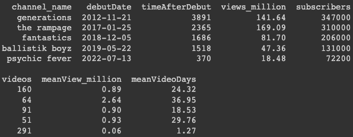
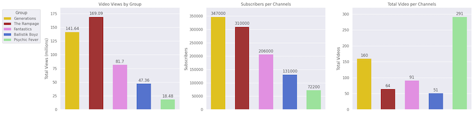
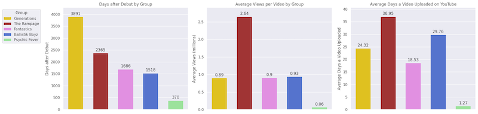
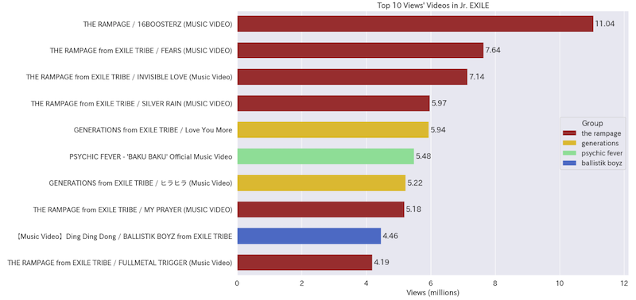
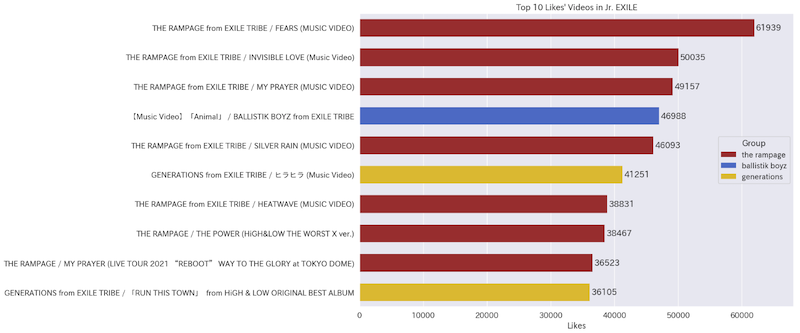
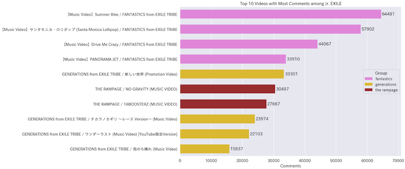
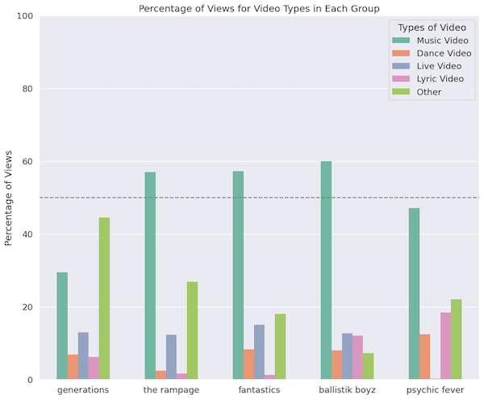
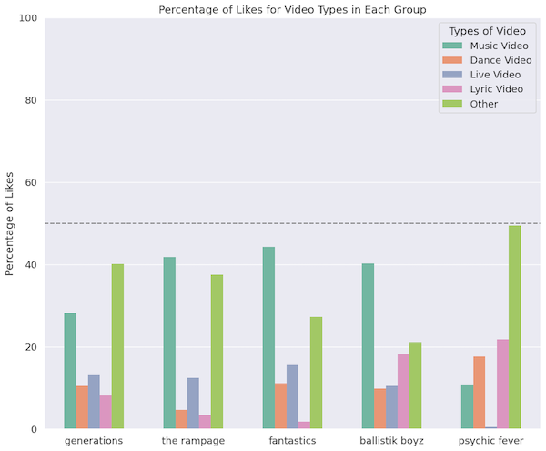
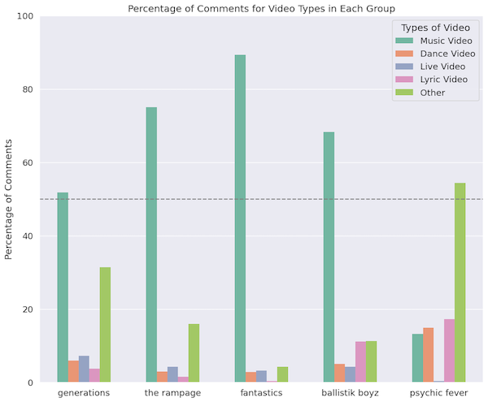

YouTube 數據抓取及分析

在這個專案中，我使用 YouTube Data API v3 抓取 Jr.EXILE 五個團體各自的五個頻道資訊、播放清單、影片統計數據後，進行資料分析並視覺化。最終找出人氣組合以及每個團體的可能強項。
使用的程式語言跟平台: Python, Google Colaboratory
抓取數據的網站: YouTube
使用的套件: pandas, seaborn
程式完全在 Google Colab 上運作，檔案也都存放在 Google Drive 雲端。
文章
我寫過一系列紀錄專案如何完成的文章在 Medium，也會寫到我如何解決過程中遇到的問題。
- YouTube 爬蟲原來不能直接爬 #0.5
- 使用 YouTube Data API v3 頻道資訊- 抓取+分析+視覺化 #1
- 使用 YouTube Data API v3 頻道播放清單的影片資訊- 抓取 #2
- 使用 YouTube Data API v3 影片統計數據- 準備 #3
- 使用 YouTube Data API v3 影片統計數據- 分析+視覺化 #4
這邊就放重點。
專案目標
- 比較日本 Jr.EXILE 五個團體在 YouTube 的人氣
- 分析每個團體的可能強項 (music video, dance video, live video)
成本
數據抓取時間在 2023/6/19
五個頻道總共找到 1367 支影片。
整個專案一共使用了三種 request，花費的總配額量為 59 單位，遠低於 YouTube 的每日配額 10,000 單位。
頻道分析
數據抓取並經過處理後的資料框如右，第一個欄位為頻道名，幾個重要的統計數據為出道日、出道天數、影片總觀看次數（單位為百萬）、訂閱人數。
第二行為影片數量、平均每支影片的觀看次數、自出道後平均上傳新影片的間隔時間。
五個頻道各自的影片總觀看次數（單位為百萬）、訂閱人數、影片數量
大致上，隨著團體的出道時間越久，影片的觀看次數越多，訂閱人數也越多，上傳至頻道的公開影片也越多。特別的是 rmpg 頻道發布了較少的影片，卻有最多的總觀看次數。 pcf 出道時間最短卻上傳了相當多的影片。
五個頻道各自的團體出道時間、平均每支影片的觀看次數、自出道後平均上傳新影片的間隔時間
頻道數據結論
rmpg 表現優異， gene, fanta, bbz 表現大致上差不多， pcf 人氣還沒起來。 YouTube 頻道資料並未區分不同種類的影片類型，因此，每個團體的特性（歌唱實力、舞蹈實力、現場表演表現、綜藝等等）未能從頻道統計數據得知。
接著，我更進一步分析不同類型的影片在 YouTube 上的表現。
影片分析
五個頻道的所有公開影片資訊抓取後，數據經過處理後，再根據 views, likes, comments 的數量排序，得到下面三組長條圖
Top 10 Views' Videos
Top 10 Likes' Videos
Top 10 Comments' Videos
影片統計數據小結
- rmpg 表現的確優異，不少 music video 的觀看次數跟 likes 常常是最多的
- gene 在 views, likes, comments 表現都挺穩定
- 新團 pcf 歌雖少，但一首新歌觀看次數居然高達五百多萬
- bbz 有一首新歌有四百多萬的觀看次數， 一支兩年前的 music video 得到四萬多的 likes
- 最有趣的是 fanta 的結果，沒有單支影片進 views or likes 的前十，然而，影片下方的留言量遠遠超過其他團體
影片類型比例
這個分析的目的是想知道觀眾喜歡看的哪一種影片。
在頻道的總觀看次數中各種類型影片所佔比例
- gene 的頻道在這個專案的分類方法分失敗了，大部分的觀看次數都跑到 Other 了
- rmpg 頻道的觀看次數超過一半在 music videos， live videos 約 13%， dance & lyric 相對稀少。不知道哪些影片被分到 Other 居然佔了這麼高的觀看次數
- fanta 頻道的觀看次數超過一半在 music videos，live videos 的觀看次數約 17%，dance 約 9%，lyric 相對稀少。看起來的確是重舞蹈跟現場表演的團體
- bbz 頻道也是超過一半的觀看次數都在 music videos， live 跟純音樂的 lyric videos 皆約 14%， dance version 跟其他類型的 other 佔的觀看次數約 9%。感覺是平衡型團體。
- pcf 頻道的觀看次數將近一半在 music videos，接著是 other, lyric, dance ， live 幾乎沒有。反而純音樂的 lyric videos 佔的觀看次數較多。
在頻道的 likes 各種類型影片所佔比例
likes 各類型影片所佔比例的 pattern 跟 views 相似。但整體沒有 views 極端
可以注意到的是，music videos 在 likes 數量的比例沒有像 views 有過半的（y=50 的那條虛線）。
我認為這兩個現象背後的可能因素類似，有兩種可能
- 同一批使用者重複看相同的影片，但一個使用者只能按一次 like
- 另一種可能解釋是，某些 music videos 觸及到非常多使用者，而他們看了影片後，沒有按 like。目前的數據無法回答這個問題。
在頻道影片得到的留言中，各種類型影片所佔比例
相較於 views 僅僅是被動的觀看，或是 likes 是按一下按鍵， comments 是主動的留下心得或心情，我認為是更粉絲取向的行為，也有一點想互動的傾向，會留下留言的這類粉絲也許更加忠誠（或狂熱？）。
那大多也是在 music videos 的留言最多。
很有趣的是， fanta 頻道中影片數據分佈相當極端，九成留言都落在 music videos。作為平均顏值最高的團體（自我定位是聰明美麗😂），也許、可能顏粉比例不少，想知道留言的內容是否也是這類的留言居多？
rmpg 頻道的 pattern 跟 fanta 的頻道很像，但分佈比較沒那麼極端，也還有約 16% 留言在其他類型的影片
其他三個頻道 comments 的各類型影片所佔比例的 pattern 跟其他指標相似但更極端，就不再討論。
也有可能是不同團的粉絲行為就不同，或者就是不同特質的團體吸引到的粉絲不同（粉絲文化也是相當複雜的）